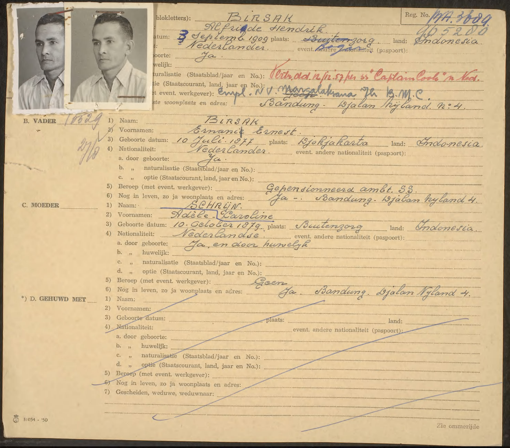
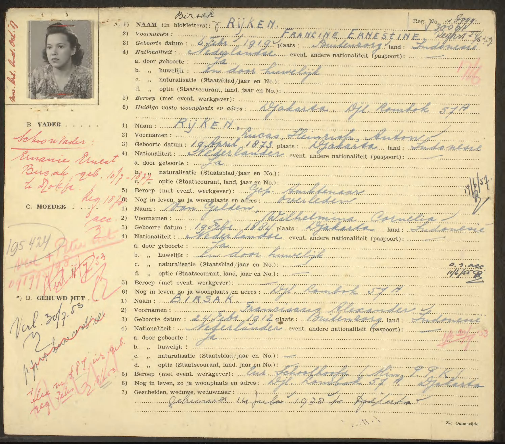
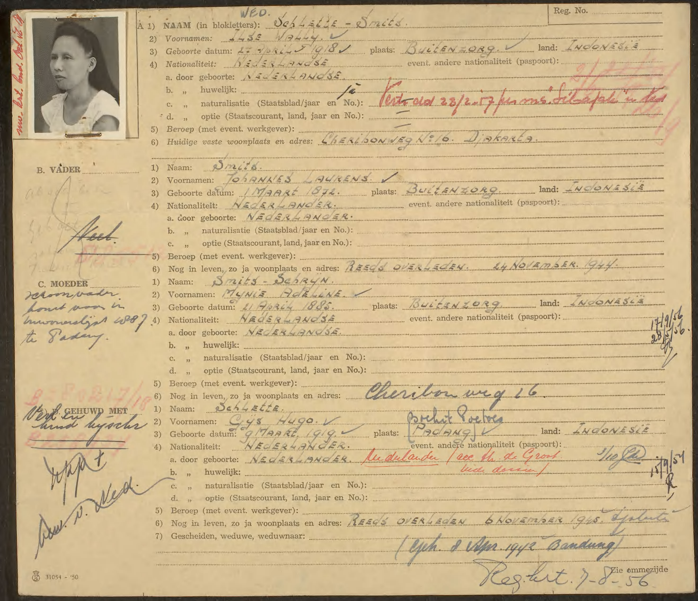
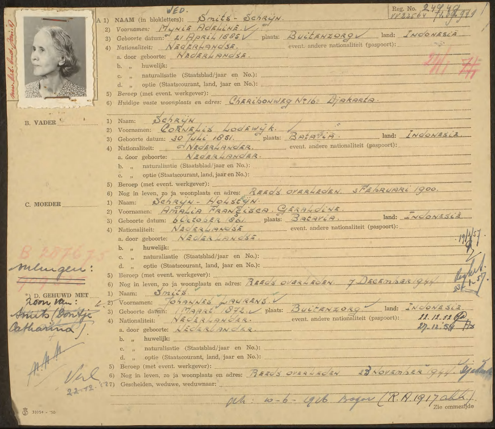
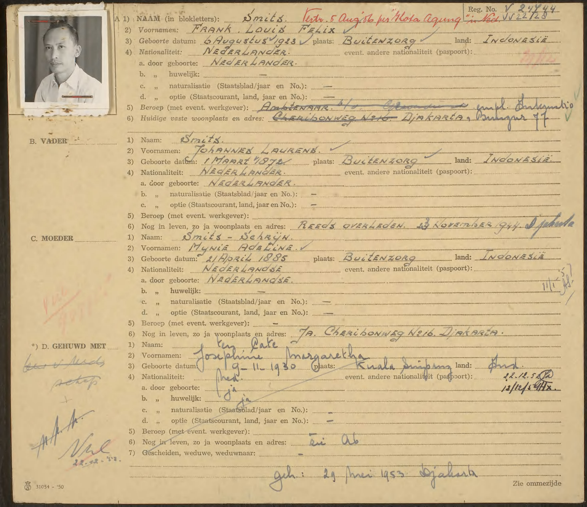

Archiefstatus · bijgewerkt 18 november 2026. In de repository staan 16 unieke CBG-scanbestanden uit de Indisch Oud-Paspoortarchief-reeks 1796. Vier identieke kopieën/alternatieve bestandsnamen zijn verwijderd; de originele beeldbytes van de bewaarde bestanden zijn behouden. B13305 is gekoppeld aan Arnold Wilhelm Birsak en B13369 aan Wilhelmina Johanna “Mien” Takken. De overige codes zijn nog niet aan personen gekoppeld. Zestien bestanden betekenen niet automatisch zestien personen of zestien volledige aanvragen: voor- en achterzijden en eventuele vervolgbladen moeten per scan worden vastgesteld.
Privacy- en publicatiecontrole vereist. Het CBG vermeldt dat een scan van de voorkant alleen openbaar wordt getoond wanneer alle personen op de kaart zijn overleden; achterzijden worden niet openbaar getoond. De openbare beschikbaarheid van elk van deze 16 individuele bestanden is in deze bewerking niet afzonderlijk bij CBG geverifieerd. Daarom moet per code worden bevestigd dat het om een publiek zichtbare voorkantscan gaat en niet om een via ontheffing verkregen privébestand. De galerij is een onderzoeksweergave, geen verklaring dat alle bestanden vrij herpubliceerbaar zijn.
Lees de officiële CBG-regels.
Aanvullende paspoortkaart · IMG_7918.jpeg. De in deze chat aangeleverde kaart lijkt “Birsak, Ernanie Ernest” te vermelden (10 juli 1877, Djokjakarta). Het onderzoeksrapport koppelt dit aan BD 2262 / paspoort 904643. Het originele bestand staat nog niet in de repository en wordt daarom niet als afbeelding getoond.
Upload originele aanvragen Upload pasfoto-uitsneden
Upload nieuwe, nog niet geordende bestanden naar de inbox.
Upload hier de originele bestanden (voor- en achterzijde als afzonderlijke bestanden). Verwijder of overschrijf geen originelen. Zie de mapinstructies.
Geïdentificeerde aanvragen
CBG B13305
Arnold Wilhelm Birsak
Geboren 2 januari 1907, Buitenzorg volgens CBG. Echtgenoot van Wilhelmina Johanna Takken. De CBG-scan B13305 is in de originele-scan-galerij opgenomen. De volledige velden en eventuele achterzijde moeten nog diplomatisch worden getranscribeerd.
Scan aanwezig · persoonskoppeling op basis van CBG-vermelding
CBG B13369
Wilhelmina Johanna “Mien” Takken
Geboren 16 juli 1913, Djimahi. Echtgenote van Arnold Wilhelm Birsak. Paspoortkaart bevat oudergegevens en een adres in Bandoeng; volledige adreslezing volgt.
Scan aanwezig · persoonskoppeling op basis van CBG-vermelding
Paspoortkaart · reg.nr. handschrift
Hubert Manuel Birsak
Geboren 9 mei 1908, Buitenzorg/Bogor volgens de kaart. Ouders: Ernanie Ernest Birsak en Caroline Adèle Schrijn. De kaart bevat twee portretopnamen en adresgegevens in Bandoeng.
Mogelijke scan in CBG-galerij · code en persoonskoppeling nog niet bevestigd
CBG-paspoortnr. 904642
Caroline Adèle Schrijn
Geboren 10 oktober 1879, Buitenzorg. Ouders: Carl Schrijn en Sahatie volgens de aanvraag. Echtgenote van Ernanie Ernest Birsak. De scan bevat twee portretopnamen.
Mogelijke scan in CBG-galerij · code en persoonskoppeling nog niet bevestigd
CBG-paspoortnr. 904643
Ernanie Ernest Birsak
Geboren 10 juli 1877, Djokjakarta. Ouders: Frederik George Willem Birsak en Johanna Theresia Plasman. Echtgenoot van Caroline Adèle Schrijn. Beroep op kaart: gepensioneerd ambtenaar; woonspoor Bandung.
Mogelijke scan in CBG-galerij · code en persoonskoppeling nog niet bevestigd
Naamlezing voorlopig
Francine Ernestine Rijken
Geboren vermoedelijk 6 juni 1919; plaatsnaam en enkele familierelaties op de scan zijn nog niet volledig ontcijferd. De rode kanttekening verwijst naar Ernanie Ernest Birsak. Relatie tot de hoofdlijn nog verifiëren.
Voorlopige identificatie · brontranscriptie nodig
Paspoortkaart · reg.nr. 34?
Arthur Rijklof Birsak
Geboren 1 februari 1879, Djokjakarta. Op de kaart staat als vader Frederik George Willem Birsak en als moeder Theresia Birsak, geboren Plasman. Gepensioneerd hoofdcommies (N.I.S. volgens kaartlezing); adresvermelding Surabaya.
Mogelijke scan in de CBG-galerij · koppeling nog niet bevestigd
Paspoortkaart
Rudi Birsak
Geboren 13 september 1933, Surabaya (kaartlezing). Ouders: Johannes Armand Louis Birsak en Emalia Geertruida Birsak. Adresvermelding in Surabaya.
Mogelijke scan in CBG-galerij · persoonskoppeling nog niet bevestigd
Paspoortkaart
Edith Birsak
Geboren 8 maart 1932, Surabaya (kaartlezing). Ouders: Johannes Armand Louis Birsak en Emalia Geertruida Birsak. Adresvermelding in Surabaya.
Mogelijke scan in CBG-galerij · persoonskoppeling nog niet bevestigd
Voorlopige naamlezing
Hendrik Birsak
De aanvraag lijkt de naam Hendrik te bevatten; geboortegegevens lijken 3 september 1909, Buitenzorg. Ouders lijken Ernanie Ernest Birsak en Caroline Adèle Schrijn. Identificatie met de Hendrik Birsak uit de krijgsgevangenenlijst is nog niet bewezen.
Voorlopige identificatie · brontranscriptie nodig
Aanvullende scan ontvangen · Ernanie Ernest Birsak
IMG_7918.jpeg · binaire upload nog open. De aanvullende kaartscan die in deze chat is aangeleverd, lijkt “Birsak, Ernanie Ernest” te vermelden en toont twee portretopnamen. De kaart lijkt te verwijzen naar 10 juli 1877 en Djokjakarta. Het onderzoeksrapport koppelt deze gegevens aan registratie BD 2262 en paspoortnummer 904643. Omdat het originele bestand IMG_7918.jpeg nog niet naar GitHub is overgebracht, staat het hier niet als afbeelding. De scan moet naast CBG-code B13299/B13305 en de reeds aanwezige kaartbestanden worden vergeleken voordat een mogelijke duplicaatrelatie wordt vastgesteld.
Originele CBG-scans · volledige bestanden
De scans zijn hieronder rechtstreeks uit de map assets/paspoortaanvragen/originelen/ gekoppeld. De originele bestandsnamen zijn behouden. Alleen B13305 en B13369 zijn op dit moment aan personen gekoppeld; de overige scans worden niet op naam gezet zolang de inhoud niet gecontroleerd is.

CBG-scan B13299
Persoon nog niet vastgesteld
Originele scan · individuele CBG-publicatiestatus nog controleren

CBG-scan B13305
Arnold Wilhelm Birsak
Origineel bestand · klik voor volledige resolutie

CBG-scan B13307
Persoon nog niet vastgesteld
Origineel bestand · klik voor volledige resolutie

CBG-scan B13311
Persoon nog niet vastgesteld
Origineel bestand · klik voor volledige resolutie

CBG-scan B13317
Persoon nog niet vastgesteld
Origineel bestand · klik voor volledige resolutie

CBG-scan B13323
Persoon nog niet vastgesteld
Origineel bestand · klik voor volledige resolutie

CBG-scan B13325
Persoon nog niet vastgesteld
Origineel bestand · klik voor volledige resolutie

CBG-scan B13333
Persoon nog niet vastgesteld
Origineel bestand · klik voor volledige resolutie

CBG-scan B13369
Wilhelmina Johanna “Mien” Takken
Origineel bestand · klik voor volledige resolutie

CBG-scan S05373
Persoon nog niet vastgesteld
Origineel bestand · klik voor volledige resolutie

CBG-scan S18889
Persoon nog niet vastgesteld
Origineel bestand · klik voor volledige resolutie

CBG-scan S18895
Persoon nog niet vastgesteld
Origineel bestand · klik voor volledige resolutie

CBG-scan S18925
Persoon nog niet vastgesteld
Origineel bestand · klik voor volledige resolutie

CBG-scan S19075
Persoon nog niet vastgesteld
Origineel bestand · klik voor volledige resolutie

CBG-scan T02255
Persoon nog niet vastgesteld
Origineel bestand · klik voor volledige resolutie

CBG-scan B13361
Persoon nog niet vastgesteld
Origineel bestand · klik voor volledige resolutie
De volledige inventaris met broncodes en identificatiestatus staat in manifest.json. Exacte dubbele kopieën zijn verwijderd, niet de originele inhoud.
Publicatieregels
| Onderdeel | Weergave |
|---|
| Paspoortaanvraag | Volledige aangeleverde scan, ongewijzigd en op oorspronkelijke resolutie; klik opent de afbeelding afzonderlijk. |
| Pasfoto | Afzonderlijke uitsnede van het portret in de hoogst beschikbare resolutie, naast de naam. Bij dubbele front-/profielopnamen worden beide bewaard. |
| Transcriptie | Alle velden, handgeschreven correcties, stempels en kanttekeningen worden afzonderlijk getranscribeerd; onzekere lezingen krijgen een vraagteken of status. |
| Volledigheid | De formulieren verwijzen naar “Zie ommezijde”. Een aanvraag wordt pas als volledig dossier aangeduid als de achterzijde ook is aangeleverd of aantoonbaar niet bestaat. |
| Herkomst | Bronbestand, uploadnaam, datum van ontvangst en eventuele bewerking worden geregistreerd. De originele scan blijft onaangetast. |
Belangrijke beperking: de paspoortaanvragen bevatten gegevens van meerdere personen op één kaart. Bij publicatie worden de gegevens per persoon ontsloten, maar de volledige originele aanvraag blijft als één integraal document beschikbaar. Zo blijft de context van de aanvraag behouden.
Open het paspoortarchief in GitHub